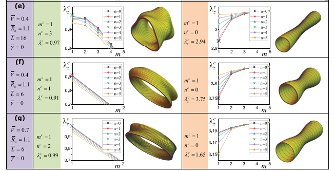
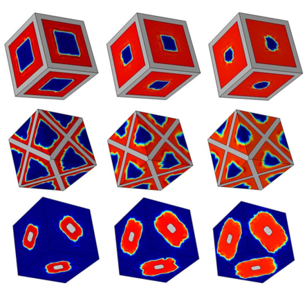

01
软材料非线性力学与有限弹性理论
介电弹性体、磁活性水凝胶和纤维增强电活性材料的本构建模、有限变形与增量力学。


智能柔性材料与结构多场耦合力学。
介电弹性体、磁活性水凝胶和纤维增强电活性材料的本构建模、有限变形与增量力学。
皱曲、屈曲、跳跃失稳、分岔、后屈曲以及不同失稳模式之间的竞争。


有限变形电活性材料与智能结构中的波传播及振动。


活体及生物混合柔性材料中的生长、再生、自增强与自愈合，包括细菌辅助矿化和演化晶格复合材料。

